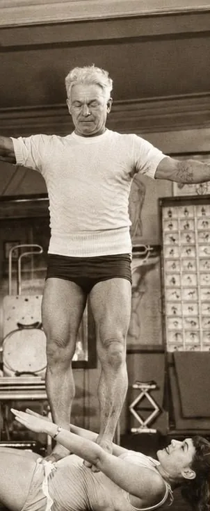
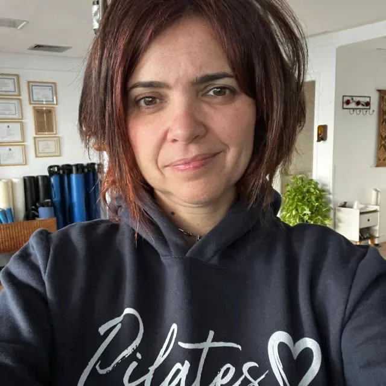
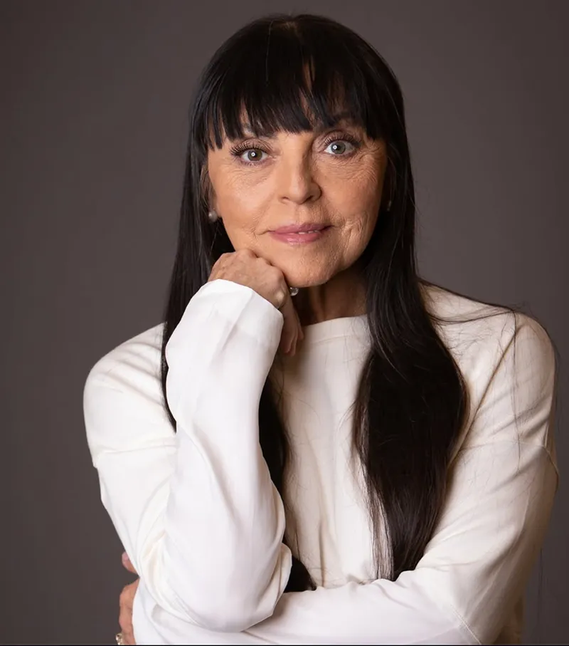
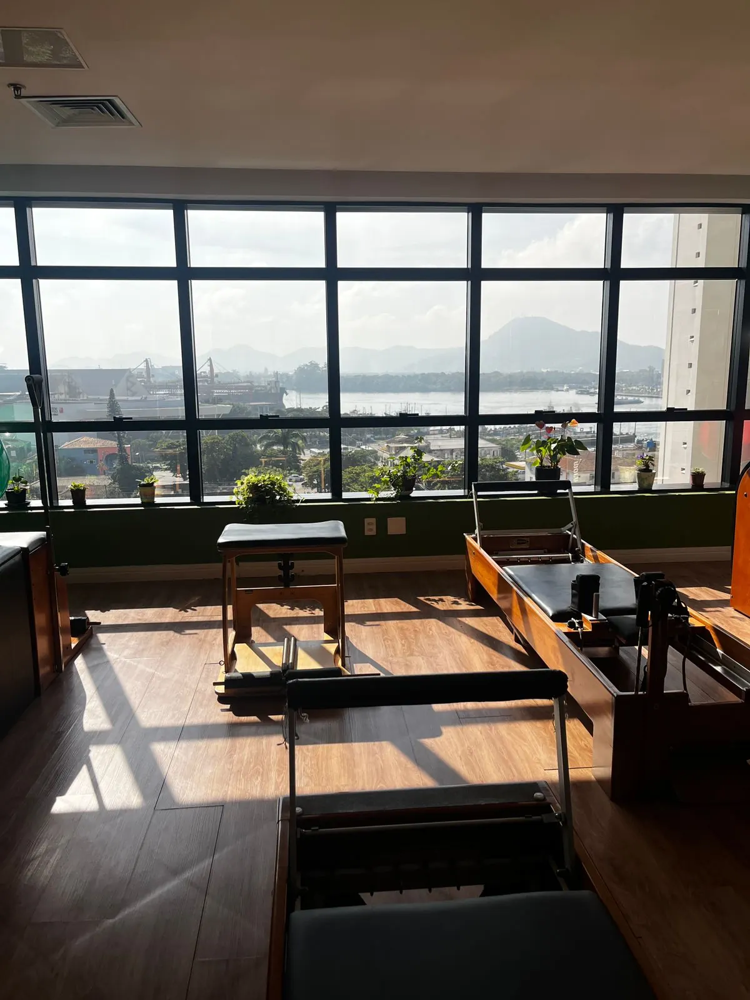

Joseph Pilates
O criador
Criador da Contrologia, sistema que deu origem ao método Pilates.
Na Ponta da Praia, em Santos, a Noremati oferece uma prática personalizada do Pilates Clássico, conduzida por Fabiana Noremati, com mais de 15 anos de experiência.
Formação em Fisioterapia e atuação dedicada ao movimento.
Formação pela Inelia Garcia, discípula direta de Romana Kryzanowska.

O Pilates Clássico é transmitido de professor para professor. A formação da Fabiana segue uma linhagem diretamente conectada ao trabalho de Joseph Pilates.

Criador da Contrologia, sistema que deu origem ao método Pilates.
Discípula de Joseph Pilates e uma das principais responsáveis por preservar e transmitir o método clássico.

Referência do Pilates Clássico e responsável pela formação da Fabiana.
O Pilates Clássico trabalha o corpo de forma integrada, com atenção à qualidade, ao controle e à progressão de cada movimento.
Desenvolvimento do corpo de forma integrada, com controle e consciência.
Movimentos conduzidos com precisão, amplitude e respeito às características de cada pessoa.
Mais percepção sobre postura, respiração, alinhamento e qualidade do movimento.
Uma prática que integra concentração, controle, fluidez e precisão.
As aulas são conduzidas de acordo com o momento, a experiência e os objetivos de cada aluno — inclusive para quem nunca praticou Pilates.
CONVERSAR COM A FABIANAUma prática que preserva a lógica, a sequência e os princípios do método original, com acompanhamento próximo e progressão consistente.
Princípios e sequência que respeitam a estrutura clássica.
Reformer, Cadillac, Chair e Barrel integrados à proposta clássica do método.
Qualidade do movimento antes da quantidade de repetições.
Orientação próxima, respeitando o momento e a evolução de cada aluno.
Na Ponta da Praia, em Santos, o Studio Noremati foi pensado para uma prática atenta, personalizada e acolhedora.

Um ambiente acolhedor e seguro, com estrutura para a prática do Pilates Clássico e acompanhamento individualizado.
O foco é oferecer uma experiência próxima, respeitando o corpo, o ritmo e os objetivos de cada pessoa.
Um caminho simples para conhecer o studio, entender a proposta e iniciar sua prática.
Conte brevemente o que você procura e tire suas primeiras dúvidas.
Entenda como funciona o Pilates Clássico e o acompanhamento da Noremati.
Fabiana conduz o trabalho considerando seu momento, experiência e objetivos.
Não. As aulas são adaptadas ao nível de cada pessoa, respeitando seu corpo e seu ritmo desde a primeira sessão.
Use roupas confortáveis que permitam liberdade de movimento. O Pilates Clássico é praticado descalço ou com meia antiderrapante.
Depende do seu objetivo e da sua rotina. Converse com a Fabiana para uma orientação personalizada.
Sim. As aulas são personalizadas para adultos, crianças e idosos, sempre respeitando o corpo e o objetivo de cada aluno.
O Pilates Clássico segue a sequência e os princípios originais do método, priorizando precisão, controle e qualidade do movimento.
Clique em “Agendar aula” e fale diretamente com a Fabiana pelo WhatsApp.
Agende uma aula e conheça o Pilates Clássico Noremati.
AGENDAR PRIMEIRA AULA